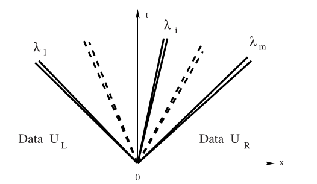

2022-11-30 Reconstruction
Contents
2022-11-30 Reconstruction#
Last time#
Notes on unstructured meshing workflow
Finite volume methods for hyperbolic conservation laws
Riemann solvers for scalar equations
Shocks and the Rankine-Hugoniot condition
Rarefactions and entropy solutions
Today#
Godunov’s Theorem
Slope reconstruction and limiting
Hyperbolic systems
Rankine-Hugoniot and Riemann Invariants
Exact Riemann solvers
Approximate Riemann solvers
using LinearAlgebra
using Plots
default(linewidth=3)
struct RKTable
A::Matrix
b::Vector
c::Vector
function RKTable(A, b)
s = length(b)
A = reshape(A, s, s)
c = vec(sum(A, dims=2))
new(A, b, c)
end
end
rk4 = RKTable([0 0 0 0; .5 0 0 0; 0 .5 0 0; 0 0 1 0], [1, 2, 2, 1] / 6)
function ode_rk_explicit(f, u0; tfinal=1., h=0.1, table=rk4)
u = copy(u0)
t = 0.
n, s = length(u), length(table.c)
fY = zeros(n, s)
thist = [t]
uhist = [u0]
while t < tfinal
tnext = min(t+h, tfinal)
h = tnext - t
for i in 1:s
ti = t + h * table.c[i]
Yi = u + h * sum(fY[:,1:i-1] * table.A[i,1:i-1], dims=2)
fY[:,i] = f(ti, Yi)
end
u += h * fY * table.b
t = tnext
push!(thist, t)
push!(uhist, u)
end
thist, hcat(uhist...)
end
function testfunc(x)
max(1 - 4*abs.(x+2/3),
abs.(x) .< .2,
(2*abs.(x-2/3) .< .5) * cospi(2*(x-2/3)).^2
)
end
flux_advection(u) = u
flux_burgers(u) = u^2/2
flux_traffic(u) = u * (1 - u)
riemann_advection(uL, uR) = 1*uL # velocity is +1
function fv_solve1(riemann, u_init, n, tfinal=1)
h = 2 / n
x = LinRange(-1+h/2, 1-h/2, n) # cell midpoints (centroids)
idxL = 1 .+ (n-1:2*n-2) .% n
idxR = 1 .+ (n+1:2*n) .% n
function rhs(t, u)
fluxL = riemann(u[idxL], u)
fluxR = riemann(u, u[idxR])
(fluxL - fluxR) / h
end
thist, uhist = ode_rk_explicit(rhs, u_init.(x), h=h, tfinal=tfinal)
x, thist, uhist
end
function riemann_burgers(uL, uR)
flux = zero(uL)
for i in 1:length(flux)
fL = flux_burgers(uL[i])
fR = flux_burgers(uR[i])
flux[i] = if uL[i] > uR[i] # shock
max(fL, fR)
elseif uL[i] > 0 # rarefaction all to the right
fL
elseif uR[i] < 0 # rarefaction all to the left
fR
else
0
end
end
flux
end
function riemann_traffic(uL, uR)
flux = zero(uL)
for i in 1:length(flux)
fL = flux_traffic(uL[i])
fR = flux_traffic(uR[i])
flux[i] = if uL[i] < uR[i] # shock
min(fL, fR)
elseif uL[i] < .5 # rarefaction all to the right
fL
elseif uR[i] > .5 # rarefaction all to the left
fR
else
flux_traffic(.5)
end
end
flux
end
riemann_traffic (generic function with 1 method)
Godunov methods (first order accurate)#
init_func(x) = testfunc(x)
x, thist, uhist = fv_solve1(riemann_traffic, init_func, 100, 2)
plot(x, uhist[:,1:5:end], legend=:none)
Burgers#
flux \(u^2/2\) has speed \(u\)
negative values make sense
satisfies a maximum principle
Traffic#
flux \(u - u^2\) has speed \(1 - 2u\)
state must satisfy \(u \in [0, 1]\)
Godunov’s Theorem (1954)#
Linear numerical methods
For our purposes, monotonicity is equivalent to positivity preservation,
Discontinuities#
A numerical method for representing a discontinuous function on a stationary grid can be no better than first order accurate in the \(L^1\) norm,
In light of these two observations, we may still ask for numerical methods that are more than first order accurate for smooth solutions, but those methods must be nonlinear.
Slope Reconstruction#
One method for constructing higher order methods is to use the state in neighboring elements to perform a conservative reconstruction of a piecewise polynomial, then compute numerical fluxes by solving Riemann problems at the interfaces. If \(x_i\) is the center of cell \(i\) and \(g_i\) is the reconstructed gradient inside cell \(i\), our reconstructed solution is
Question#
Is the symmetric slope
Slope limiting#
We will determine gradients by “limiting” the above slope using a nonlinear function that reduces to 1 when the solution is smooth. There are many ways to express limiters and our discussion here roughly follows Berger, Aftosmis, and Murman (2005).

We will express a slope limiter in terms of the ratio
Common limiters#
limit_zero(r) = 0
limit_none(r) = 1
limit_minmod(r) = max(min(2*r, 2*(1-r)), 0)
limit_sin(r) = (0 < r && r < 1) * sinpi(r)
limit_vl(r) = max(4*r*(1-r), 0)
limit_bj(r) = max(0, min(1, 4*r, 4*(1-r)))
limiters = [limit_zero limit_none limit_minmod limit_sin limit_vl limit_bj];
plot(limiters, label=limiters, xlims=(-.1, 1.1))
A slope-limited solver#
function fv_solve2(riemann, u_init, n, tfinal=1, limit=limit_sin)
h = 2 / n
x = LinRange(-1+h/2, 1-h/2, n) # cell midpoints (centroids)
idxL = 1 .+ (n-1:2*n-2) .% n
idxR = 1 .+ (n+1:2*n) .% n
function rhs(t, u)
jump = u[idxR] - u[idxL]
r = (u - u[idxL]) ./ jump
r[isnan.(r)] .= 0
g = limit.(r) .* jump / 2h
fluxL = riemann(u[idxL] + g[idxL]*h/2, u - g*h/2)
fluxR = fluxL[idxR]
(fluxL - fluxR) / h
end
thist, uhist = ode_rk_explicit(
rhs, u_init.(x), h=h, tfinal=tfinal)
x, thist, uhist
end
fv_solve2 (generic function with 3 methods)
x, thist, uhist = fv_solve2(riemann_advection, testfunc, 100, .5,
limit_sin)
plot(x, uhist[:,1:10:end], legend=:none)
Hyperbolic systems#
Isentropic gas dynamics#
Variable |
meaning |
|---|---|
\(\rho\) |
density |
\(u\) |
velocity |
\(\rho u\) |
momentum |
\(p\) |
pressure |
Equation of state \(p(\rho) = C \rho^\gamma\) with \(\gamma = 1.4\) (typical air).
“isothermal” gas dynamics: \(p(\rho) = c^2 \rho\), wave speed \(c\).
Compute as \( \rho u^2 = \frac{(\rho u)^2}{\rho} .\)
Smooth wave structure#
For perturbations of a constant state, systems of equations produce multiple waves with speeds equal to the eigenvalues of the flux Jacobian,
Riemann problem for systems: shocks#
Given states \(U_L\) and \(U_R\), we will see two waves with some state \(U^*\) in between. There could be two shocks, two rarefactions, or one of each. The type of wave will determine the condition that must be satisfied to connect \(U_L\) to \(U_*\) and \(U_*\) to \(U_R\).
Left-moving wave#
If there is a shock between \(U_L\) and \(U_*\), the Rankine-Hugoniot condition
Solving the first equation for \(s\) and substituting into the second, we compute \begin{split} \frac{(\rho_* u_* - \rho_L u_L)^2}{\rho_* - \rho_L} &= \rho_* u_^2 - \rho_L u_L^2 + c^2 (\rho_ - \rho_L) \ \rho_^2 u_^2 - 2 \rho_* \rho_L u_* u_L + \rho_L^2 u_L^2 &= \rho_* (\rho_* - \rho_L) u_^2 - \rho_L (\rho_ - \rho_L) u_L^2 + c^2 (\rho_* - \rho_L)^2 \ \rho_* \rho_L \Big( u_^2 - 2 u_ u_L + u_L^2 \Big) &= c^2 (\rho_* - \rho_L)^2 \ (u_* - u_L)^2 &= c^2 \frac{(\rho_* - \rho_L)^2}{\rho_* \rho_L} \ u_* - u_L &= \pm c \frac{\rho_* - \rho_L}{\sqrt{\rho_* \rho_L}} \end{split} and will need to use the entropy condition to learn which sign to take.
Admissible shocks#
We need to choose the sign
The entropy condition requires that
Right-moving wave#
The same process for the right wave \(\lambda(U) = u + c\) yields a shock when \(\rho_* \ge \rho_R\), in which case the velocity jump is
Rarefactions#
A rarefaction occurs when
Generalized Riemann invariants#
(Derivation of this condition is beyond the scope of this class.)
Isothermal gas dynamics#
across the wave \(\lambda = u-c\). We can rearrange to
Integration yields
Basic algorithm#
Find \(\rho_*\)
Use entropy condition (for shock speeds)
If it’s a shock: find \(u_*\) using Rankine-Hugoniot
If it’s a rarefaction: use generalized Riemann invariant

First a miracle happens#
In general we will need to use a Newton method to solve for the state in the star region.
Exact Riemann solver for isothermal gas dynamics#
function flux_isogas(U, c=1)
rho = U[1]
u = U[2] / rho
[U[1], U[1]*u + c^2*rho]
end
function ujump_isogas(rho_L, rho_R, c=1)
if rho_R > rho_L # shock
(rho_L - rho_R) / sqrt(rho_L*rho_R)
else # rarefaction
c * (log(rho_L) - log(rho_R))
end
end
function dujump_isogas(rho_L, drho_L, rho_R, drho_R, c=1)
if rho_R > rho_L # shock
((drho_L - drho_R) / sqrt(rho_L*rho_R)
- .5*(rho_L - rho_R) * (rho_L*rho_R)^(-3/2) * (drho_L * rho_R + rho_L * drho_R))
else
c * (drho_L / rho_L - drho_R / rho_R)
end
end
dujump_isogas (generic function with 2 methods)
function riemann_isogas(UL, UR, maxit=20)
rho_L, u_L = UL[1], UL[2]/UL[1]
rho_R, u_R = UR[1], UR[2]/UR[1]
rho = .5 * (rho_L + rho_R) # initial guess
for i in 1:maxit
f = (ujump_isogas(UL[1], rho)
+ ujump_isogas(rho, UR[1])
- (UR[2]/UR[1] - UL[2]/UL[1]))
if norm(resid) < 1e-10
u = u_L + ujump_isogas(UL[1], rho)
break
end
J = (dujump_isogas(UL[1], 0, rho, 1)
+ dujump_isogas(rho, 1, uR[1], 0))
delta_rho = -f / J
while min(rho + delta_rho <= 0)
delta_rho /= 2 # line search to prevent negative rho
end
end
U0 = resolve_isogas(UL, UR, rho)
flux_isogas(U0)
end
riemann_isogas (generic function with 2 methods)
Resolving waves for isothermal gas dynamics#
function resolve_isogas(UL, UR, U_star)
rho_L, u_L = UL[1], UL[2]/UL[1]
rho_R, u_R = UR[1], UR[2]/UR[1]
rho, u = U_star[1], U_star[2] / U_star[1]
if u_L - c < 0 < u - c || u + c < 0 < u_R + c
# inside left (right) sonic rarefaction
u0 = sign(u) * c
rho0 = exp((u0-u)/c + log(rho))
return [rho0, rho0 * u0]
elseif ((rho_L >= rho && 0 <= u_L - c) ||
(rho_L < rho && 0 < rho*u - UL[2]))
return UL
elseif ((rho_R >= rho && u_R + c <= 0) ||
(rho_R < rho && UR[2] - rho*u > 0))
return UR
end
[rho, rho*u]
end
resolve_isogas (generic function with 1 method)
function initial_isogas(x)
[1 .+ 2 * exp.(-4x .^ 2) 0*x]
end
x = LinRange(-1, 1, 100)
U = initial_isogas(x)
plot(x, U)
Solver#
function fv_solve2system(riemann, u_init, n, tfinal=1, limit=limit_sin)
h = 2 / n
x = LinRange(-1+h/2, 1-h/2, n) # cell midpoints (centroids)
idxL = 1 .+ (n-1:2*n-2) .% n
idxR = 1 .+ (n+1:2*n) .% n
U0 = u_init(x)
m, n = size(U0)
@show size(U0)
function rhs(t, U)
U = reshape(U, m, n)
jump = u[:,idxR] - u[:,idxL]
r = (u - u[idxL]) ./ jump
r[isnan.(r)] .= 0
g = limit.(r) .* jump / 2h
fluxL = riemann(u[idxL] + g[idxL]*h/2, u - g*h/2)
fluxR = fluxL[idxR]
(fluxL - fluxR) / h
end
thist, uhist = ode_rk_explicit(
rhs, u_init.(x), h=h, tfinal=tfinal)
x, thist, uhist
end
fv_solve2system (generic function with 3 methods)
x, t_hist, U_hist = fv_solve2system(riemann_isogas, initial_isogas, 100, 0.1)
size(U_hist)
size(U0) = (100, 2)
MethodError: no method matching +(::Matrix{Float64}, ::Float64)
For element-wise addition, use broadcasting with dot syntax: array .+ scalar
Closest candidates are:
+(::Any, ::Any, ::Any, ::Any...) at operators.jl:591
+(::T, ::T) where T<:Union{Float16, Float32, Float64} at float.jl:383
+(::AbstractArray, ::StaticArraysCore.StaticArray) at ~/.julia/packages/StaticArrays/6QFsp/src/linalg.jl:13
...
Stacktrace:
[1] _broadcast_getindex_evalf
@ ./broadcast.jl:670 [inlined]
[2] _broadcast_getindex
@ ./broadcast.jl:643 [inlined]
[3] getindex
@ ./broadcast.jl:597 [inlined]
[4] copy
@ ./broadcast.jl:899 [inlined]
[5] materialize
@ ./broadcast.jl:860 [inlined]
[6] broadcast_preserving_zero_d
@ ./broadcast.jl:849 [inlined]
[7] +(A::Vector{Matrix{Float64}}, Bs::Vector{Float64})
@ Base ./arraymath.jl:16
[8] ode_rk_explicit(f::var"#rhs#4"{typeof(riemann_isogas), Int64, typeof(limit_sin), Int64, Vector{Int64}, Vector{Int64}, Float64}, u0::Vector{Matrix{Float64}}; tfinal::Float64, h::Float64, table::RKTable)
@ Main ./In[1]:31
[9] fv_solve2system(riemann::typeof(riemann_isogas), u_init::typeof(initial_isogas), n::Int64, tfinal::Float64, limit::Function)
@ Main ./In[11]:19
[10] fv_solve2system(riemann::Function, u_init::Function, n::Int64, tfinal::Float64)
@ Main ./In[11]:2
[11] top-level scope
@ In[12]:1
[12] eval
@ ./boot.jl:368 [inlined]
[13] include_string(mapexpr::typeof(REPL.softscope), mod::Module, code::String, filename::String)
@ Base ./loading.jl:1428
Approximate Riemann solvers#
Exact Riemann solvers are
complicated to implement
fragile in the sense that small changes to the physics, such as in the equation of state \(p(\rho)\), can require changing many conditionals
the need to solve for \(\rho^*\) using a Newton method and then evaluate each case of the wave structure can be expensive.
An exact Riemann solver has never been implemented for some equations.
HLL (Harten, Lax, and van Leer)#
Assume two shocks with speeds \(s_L\) and \(s_R\). These speeds will be estimated and must be at least as fast as the fastest left- and right-traveling waves. If the wave speeds \(s_L\) and \(s_R\) are given, we have the Rankine-Hugoniot conditions across both shocks,
Adding these together gives
Isothermal gas dynamics#
Rusanov method#
Special case \(s_L = - s_R\), in which case the wave structure is always subsonic and the flux is simply
Observations on HLL solvers#
The term involving \(U_R-U_L\) represents diffusion and will cause entropy to decay (physical entropy is produced).
If our Riemann problem produces shocks and we have correctly calculated the wave speeds, the HLL solver is exact and produces the minimum diffusion necessary for conservation.
If the wave speed estimates are slower than reality, the method will be unstable due to CFL.
If the wave speed estimates are faster than reality, the method will be more diffusive than an exact Riemann solver.